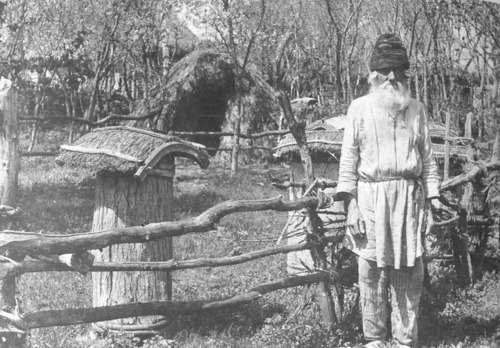
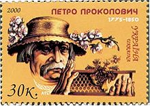
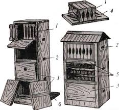
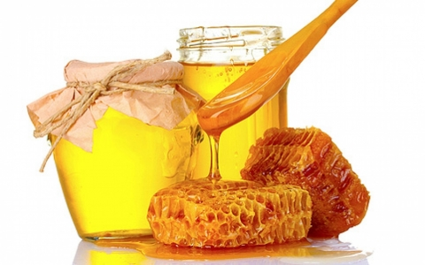

“ГАЛИЦЬКІЙ БДЖІЛ”
Персональний сайт галицького бджоляра
Історія бджільництва в Україні

Бджільництво належить до найдавніших занять українців.
Про поширеність його свідчать збережені донині давні топоніми та гідроніми:
- Мединичі
- Мединівка
- Бортне
- Бортники
- Бортничі
- Уборть
Мед та віск завжди широко використовувалися як продукти харчування,
а також служили оброком при зборі данини, були важливим предметом експорту до Західної Європи.
На території Русі бджільництво, як промисел, прослідковується з Х ст.
нашої ери. Розвитку бджільництва на території Київської Русі сприяли відповідні природно-кліматичні умови,
достаток медоносів у лісових масивах, лугах і степах. До появи цукру мед був єдиним солодким продуктом для людини.
Віск широко застосовувався в домашнім господарстві для освітлення і здійснення релігійних обрядів
(особливо після прийняття християнства). Бджільництвом у цей час займалися майже всі селяни.
Мед і віск відігравали велику роль в торгівлі Київської Русі з країнами Європи і Грецією.

Винахідником рамкового вулика та всієї сучасної (раціональної) системи бджільництва був
Петро Прокопович, який жив у XIX столітті на території нинішньої Чернігівської області.
У 1814 році винахідник вперше виділив рамку в самостійну частину бджолиного житла.
Завдяки цьому стало можливим вільно оглянути бджолину сім'ю й активно впливати на хід її розвитку.

Вулик Прокоповича дозволив вилучати мед, не винищуючи димом бджіл, як це практикувалося в ті часи.
Нині рамкою оперують мільйони пасічників у світі. Прокопович здійснив також цілу низку інших видатних винаходів,
які мали велике значення для розвитку світового бджільництва.
1910 року в Російській імперії налічувалося 6,3 млн бджолиних сімей, 1,6 з яких — на території України.
Під час Першої світової війни кількість бджолиних сімей зменшилася в 2 рази. Під час Другої світової
бджільництво знову зазнало занепаду. Тому у 1945 року було прийнято декрет РНК СРСР «Про заходи з розвитку бджільництва».
В 1960-ті роки відбувалося укрупнення колгоспних і радгоспних пасік. Якщо в 1955 році середній розмір пасіки становив
70 сімей, станом на 1973 рік 150 сімей у колгоспах та 250 — у радгоспах. При цьому загальна кількість сімей зросла лише
в незначних розмірах (у всьому СРСР з 9 млн до 9,3).
У 1980-ті роки Україна займала серед радянських республік 2-ге місце за виробництвом меду.
Станом на 1987 рік на території УРСР було 2,6 млн бджолиних сімей (30% загальної кількості в СРСР). Тоді ж виробництво
меду сягало 48 тис. тон, пасічного воску — 1 тис. тон, пресового воску — 140 тон, вощини — 950 тон.
Наприкінці 1980-их в УРСР діяли 93 спеціалізовані бджільницькі підприємства та бджолоферми, серед яких виділялися
два бджолорозплідницькі радгоспи в Закарпатській та Херсонській областях.

1987 року було затверджено державний ГОСТ на продукцію бджільництва, який діяв до 2006 року.
Станом на 1990 рік в УРСР було близько 4 млн бджолиних сімей (1,1 млн у приватному секторі).
До 1995 року на території України було приблизно 5 млн бджолиних сімей, котрі виробляти 60 тисяч тон меду на рік.
Проте згодом почався спад галузі. Кількість бджолиних сімей впала до 2 млн (станом на 2002–2003 роки).
Проте зараз відбувається відновлення галузі і кількість бджолиних сімей зросла до 3,75 млн, а виробництво 2008 року
перевершило радянські показники.